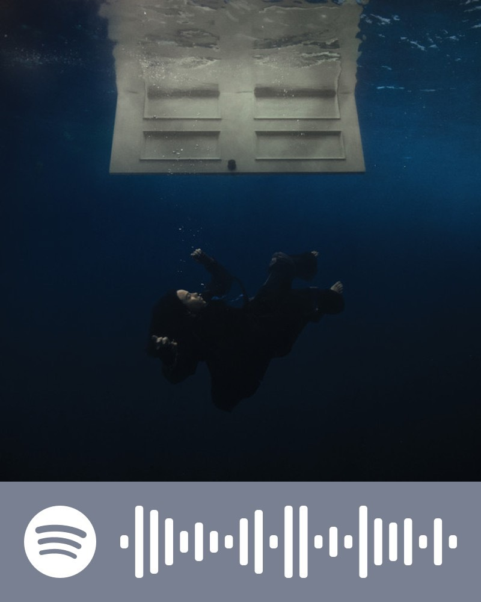
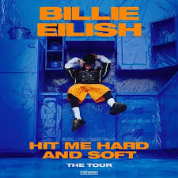
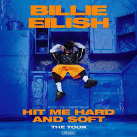

Billish Eilish is an American singer songwriter.
Hit Me Hard and Soft
By Billie Eilish
Billie Eilish
Billie Elish was born on the 18th of december,2001, and is an american singer and songwriter. She has three hit albums (When we all fall asleep, where do we go?, Happier than ever, Hit me hard and soft) and two EPs (Dont smile at me, Guitar songs).
She first rose to fame in 2017 with her debut single 'Ocean eyes' and continued to rise from there.
Billie's debut studio album, "When We All Fall Asleep, Where Do We Go?" (2019), debuted at number one on the US Billboard 200 and UK Albums Chart. The album's lead single, "Bad Guy," became a global hit and topped the US Billboard Hot 100. She has her own merch store. She is started her Hit me Hard and Soft tour on the 29th of September, in Quebec City, Canada, and will continue until the 27th of July in Dublin, Ireland. She got so popular after Hit me Hard and Soft was released that she was invited to perform 'BIRDS OF A FEATHER' at the Olympics closing ceremony to welcome the Games to L.A.
Hit me hard and soft
Hit me hard and soft is my favourite album. It was released this year on May 17th and has been on repeat for me ever since then. It has won many awards and has been nominated for multiple Grammy's. It has officially been certified Platinum by the RIAA as of September 4th, 2024. (sold more than a million copies). 'BIRDS OF A FEATHER' is also one of the most streamed songs in all of 2024.
The album has 10 tracks:
1.SKINNY
2.LUNCH
3.CHIHIRO
4.BIRDS OF A FEATHER
5.WILDFLOWER
6.THE GREATEST
7.L'AMOUR DE MA VIE
8.THE DINER
9.BITTERSUITE
10.BLUE


